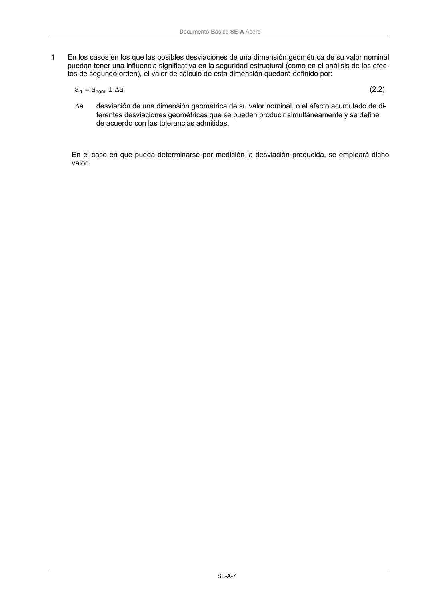

DB-SE-A Acero · edición 2007-10-23 · capa oficial
Documento DB-SE-A-oficial · SHA-256 del PDF 9ed9ea694aabfbda3bfbbef40dfe9223fde05d13c35bc2ba9751e5a96a22a64f
Página física 9 de 168.
Copia fiel del PDF fuente · Fuente oficial
Ficha de la disposición en la fuente oficial
Formato: Texto de la página (Markdown)
Documento Básico SE-A Acero SE-A-7 1 En los casos en los que las posibles desviaciones de una dimensión geométrica de su valor nominal puedan tener una influencia significativa en la seguridad estructural (como en el análisis de los efec- tos de segundo orden), el valor de cálculo de esta dimensión quedará definido por: a a a nom d ∆ ± = (2.2) a ∆ desviación de una dimensión geométrica de su valor nominal, o el efecto acumulado de di- ferentes desviaciones geométricas que se pueden producir simultáneamente y se define de acuerdo con las tolerancias admitidas. En el caso en que pueda determinarse por medición la desviación producida, se empleará dicho valor.
